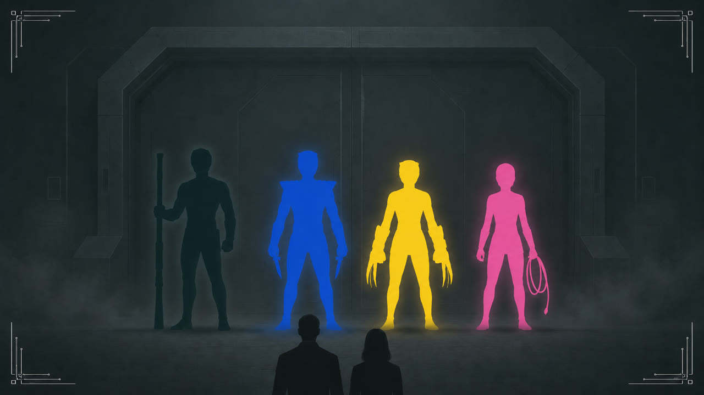

Ending C
Ending C
긴 토론이 끝난 뒤, 우리는 레드를 죽인 사람으로 옐로를 지목했다.
“아니에요. 저는 레드 선배를 죽이지 않았어요.”
옐로는 한 사람씩 바라보며 다시 부인했지만, 아무도 지목을 거두지 않았다.
박사는 조사 중 자신의 연구실에서 발견된 보고서를 집어 들었다.
“잠깐. 지금 이러고 있을 때가 아니에용.”
한 아이가 사라진 부모를 찾아 달라고 부탁했다. 보고서에는 레드가 두 사람의 실종을 조사하기 위해 검은 날개 표식으로 카오스 말단 구역에 들어갔다고 적혀 있었다.
“레드가 조사한 말단 구역부터 찾아봐용. 아이의 부모가 살아 있다면 지금 움직여야 해용.”
블랙이 카오스 말단 구역으로 들어가는 방법과 안쪽 길을 알고 있다고 말했다.
“블랙, 그 길을 어떻게 아는지는 돌아온 뒤 물어보겠어용. 네 사람 모두 출동 준비해용. 제가 통신으로 지휘할게용.”
블루는 자신의 장비를 챙긴 뒤 옐로의 장비를 집어 옐로 앞에 놓았다. 옐로는 말없이 장비를 들고 자리에서 일어났다.
네 사람은 블랙이 알려 준 말단 구역부터 수색했다. 돌아가는 길이 끊긴 곳에서는 옐로가 먼저 멈춰 섰다. 블랙이 다른 길을 가리켰지만, 옐로는 핑크가 박사와 통신을 회복할 때까지 움직이지 않았다.
비어 있는 구역을 지나 우회로 안쪽에서 아이의 부모를 찾았다. 돌아오는 동안 옐로는 두 사람 곁을 지켰다. 누구도 대열에서 먼저 빠져나가지 않았다.
레드가 찾던 아이의 부모는 그곳에 살아 있었다.
아이의 부모를 안전한 곳까지 데려오자 기다리던 아이가 달려왔다. 옐로는 곧바로 길을 비켜 주었고, 세 사람이 서로를 끌어안자 굳게 쥐고 있던 주먹을 폈다. 블랙은 그 모습을 몇 걸음 떨어진 곳에서 지켜봤다. 아이와 부모가 자리를 떠난 뒤, 네 사람은 함께 연구소로 돌아갔다.

연구소로 돌아온 뒤, 박사는 네 사람의 진술서를 사건이 벌어진 순서대로 다시 정리했다.
“옐로부터 다시 들을게용. 말이 끝날 때까지 질문하지 마세용.”
옐로는 두 손을 무릎 위에 모은 채 고개를 들었다.
“말하지 못한 건 있어요. 그래도 레드 선배를 죽이지는 않았어요. 다시 확인해 주세요.”
박사가 옐로의 진술서를 펼쳤다. 맞은편의 블랙은 고개를 들지 않았다.